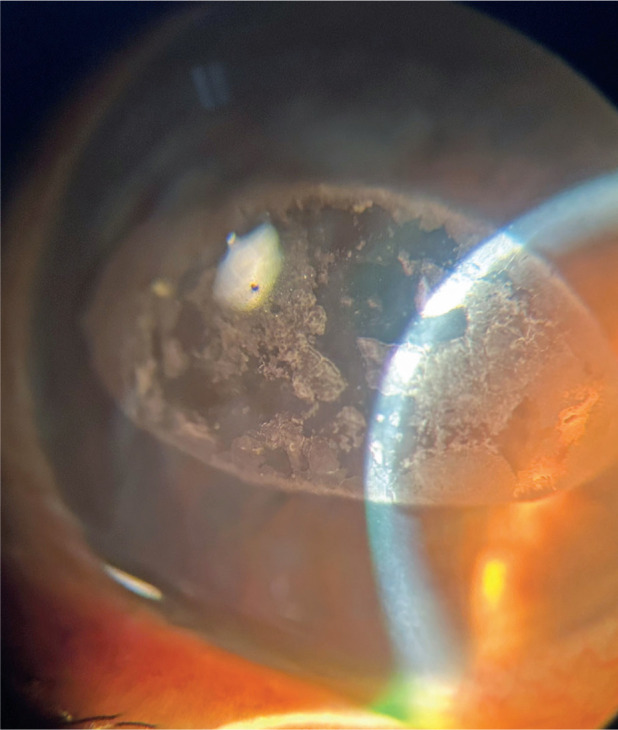
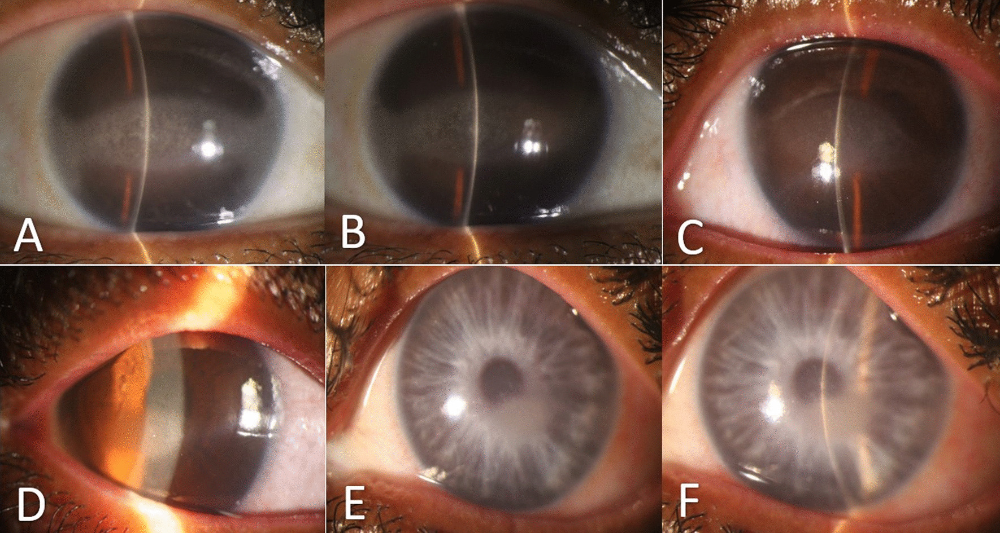
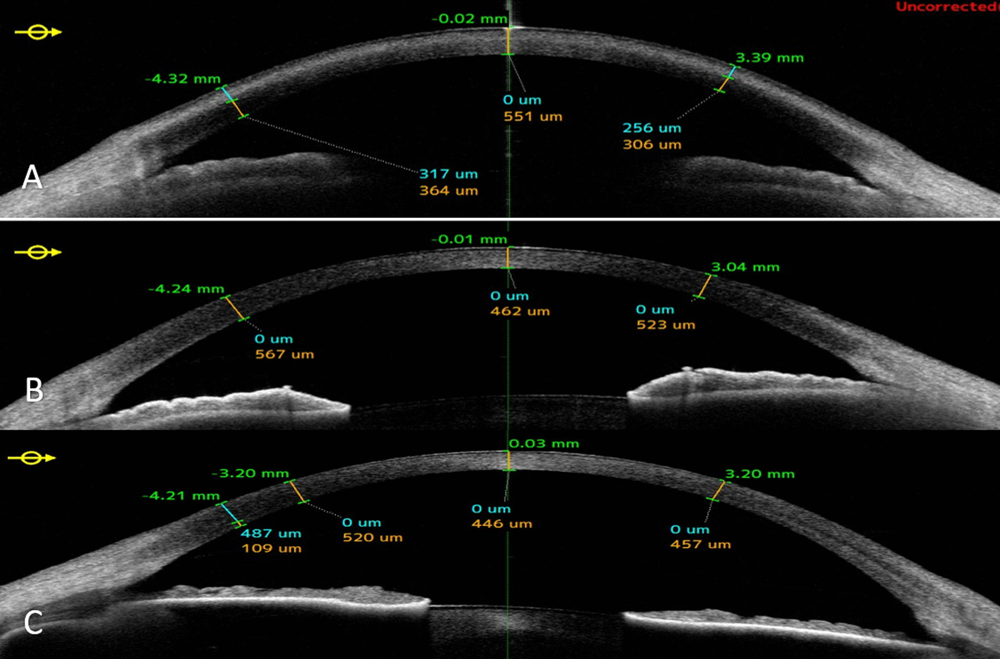
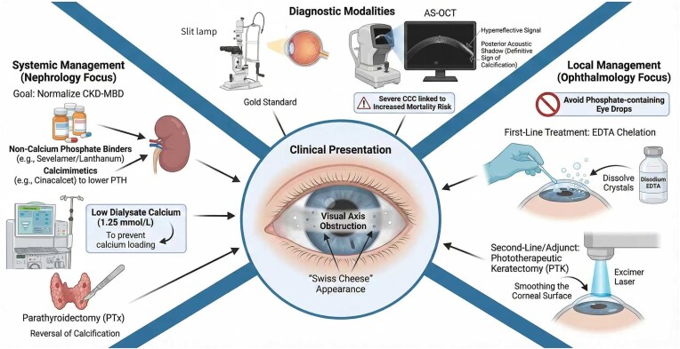
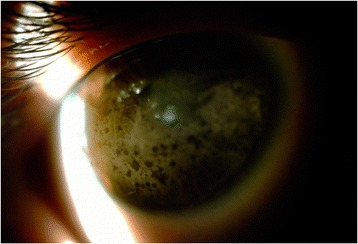

3254 — Dải canxi hóa giác mạc / Calcific band keratopathy
Tags: pattern:dai-ngang-khe-mi pattern:lo-pho-mai pattern:lan-tu-ria-vao-trung-tam pattern:giac-mac-nong pattern:canxi-hoa vung:mat vung:giac-mac vung:be-mat-nhan-cau protocol:slit-lamp protocol:AS-OCT protocol:chelation-EDTA protocol:PTK score:Porter-Crombie score:AS-OCT-Pessoa incidentaloma:khong
Mức chắc chắn (certainty): tổng hợp y văn (literature synthesis) — dựng từ một tổng quan hệ thống hoá 2026 về canxi hóa mắt ở bệnh thận mạn (PMC12997402), một đoàn hệ ghép cặp toàn quốc 94.039 bệnh nhân (PMC4921853), hai loạt EDTA lớn (230 bệnh nhân — PMID 15183790; 108 ca, 89 ca phân tích — PMC5770724), một nghiên cứu bệnh–chứng 100 mắt sau chấn thương nhãn cầu hở bơm dầu (PMC8342885), loạt PTK viêm màng bồ đào (PMC4654727), loạt PTK cải tiến (PMC11476468) và ca gia đình 3/7 anh chị em (PMC10925011). Nhóm không có bệnh nhân của mình; chỗ chưa đủ chắc ghi "chưa rõ". Không ghi tên tác giả — attribution = tạp chí + năm + PMCID/DOI.
Câu chốt: bệnh nhân có dải trắng–xám nằm NGANG, đúng vùng khe mi, bờ rõ, có các lỗ trong nhỏ ("phô mai Thụy Sĩ"), chừa một khoảng trong sát rìa, và lan dần từ 3 giờ – 9 giờ vào trung tâm. Dải này là calci phosphate (hydroxyapatite) lắng ở màng Bowman và mô đệm nông, không phải màng xơ — nên không đáp ứng corticoid, mà bóc biểu mô + EDTA hòa tan canxi là điều trị đầu tay (sạch trục thị giác 97,8%, tái phát 28,1%). Bốn số phải nhớ: bệnh thận mạn làm tăng nguy cơ gấp 11,56 lần; 1 điểm nặng hơn trên thang canxi hóa = +26,4% nguy cơ tử vong 1 năm; EDTA sạch trục thị giác 97,8%, thị lực giữ hoặc cải thiện 79,8%; và thuốc nhỏ mắt đệm phosphate là nguyên nhân iatrogenic bỏ sót được.
1. Tổng quan bệnh học – cơ chế hình ảnh (TẠI SAO)
1.1 Chất lắng là gì và lắng ở đâu
- Calcific band keratopathy (CBK) = lắng calci phosphate, xác định bằng tinh thể hydroxyapatite, ở lớp nông nhất của giác mạc: màng đáy biểu mô, màng Bowman và mô đệm nông (PMC12997402). Mô bệnh ca gia đình cho thấy canxi nằm ngoài tế bào, trong mô đệm nông, kèm thoái hóa dạng nang suốt bề dày mô đệm (PMC10925011).
- Vị trí nông này quyết định toàn bộ chiến lược: canxi nằm trên đường ánh sáng nhưng còn bóc được bằng cơ học/chelation; khi lắng sâu vào mô đệm giữa mới cần PTK hoặc ghép giác mạc.
- TẠI SAO canxi lắng thành DẢI NGANG: vùng khe mi là phần giác mạc phơi ra không khí. CO₂ khuếch tán từ bề mặt ra ngoài làm pH tại chỗ tăng nhẹ (kiềm hóa cục bộ); đồng thời nước mắt bay hơi làm calci và phosphate bị cô đặc. Khi tích Ca × P vượt tích số hòa tan, muối canxi kết tủa đúng ở vùng phơi sáng — tạo hình dải chứ không phải đám tròn (PMC12997402). Khô mắt làm nặng thêm vì nước mắt càng cô đặc.
- TẠI SAO bắt đầu ở 3 và 9 giờ rồi lan vào trung tâm: hai đầu dải nằm ở rìa vùng khe mi — nơi màng nước mắt mỏng nhất và tiếp xúc bờ mi nhiều nhất; tổn thương lan dọc theo vùng phơi vào trục thị giác, nên mức lan vào trung tâm chính là mức ảnh hưởng thị lực (PMC12997402).
- TẠI SAO có "lỗ phô mai Thụy Sĩ" (Swiss-cheese holes): các nhánh thần kinh giác mạc xuyên qua màng Bowman tạo vùng không lắng tinh thể; khi dải canxi dày lên, các vùng này còn trong và nổi bật thành lỗ nhỏ bờ rõ — đây là dấu gần như đặc hiệu của dải canxi hóa, và là chìa khóa phân biệt với dải xơ/arcus (PMC12997402).
- TẠI SAO trắng đục và TẠI SAO chói nhiều hơn mờ: hydroxyapatite tán xạ ánh sáng mạnh hơn nhu mô trong suốt; bề mặt gồ ghề làm tăng tán xạ ngược (straylight) và chói–quầng, trong khi thị lực trung tâm có thể còn tốt nếu dải chưa phủ trục. Vì vậy phải hỏi chói, quầng, lái xe ban đêm, không chỉ đo thị lực.
1.2 Hai "cú đánh": toàn thân quá bão hòa + cú tác động tại mắt
Mô hình "two-hit" của tổng quan 2026 (PMC12997402):
| Thành phần | Nội dung | Hệ quả trên giác mạc |
|---|---|---|
| Cú đánh 1 — toàn thân | Bệnh thận mạn–rối loạn khoáng xương (CKD-MBD): tăng phosphate, tải calci, cường cận giáp thứ phát, thiếu chất ức chế (fetuin-A, Klotho, MGP hoạt hóa) | Huyết tương và nước mắt quá bão hòa Ca–P, sẵn sàng kết tủa |
| Cú đánh 2 — tại mắt | pH kiềm cục bộ do CO₂ thoát ra, khô mắt, viêm mạn, thuốc đệm phosphate, dầu silicon, mất biểu mô | Tạo mầm kết tinh tại màng Bowman/mô đệm nông |
- Chất ức chế bị mất: fetuin-A giảm ở bệnh thận mạn (giảm khả năng "hút" Ca–P thành hạt hòa tan); Klotho giảm làm FGF23 kháng và phosphate không thải được; MGP cần vitamin K để carboxyl hóa — bệnh thận mạn thường thiếu vitamin K chức năng (PMC12997402). Đây là lý do canxi hóa xuất hiện dù calci máu chỉ "cao–bình thường".
1.3 Nguyên nhân — con số thật từ các loạt lớn
| Bối cảnh | Số liệu | Nguồn |
|---|---|---|
| Bệnh thận mạn giai đoạn cuối (ESRD) lọc máu | 94.039 bệnh nhân ghép cặp: 230 ca dải canxi hóa vs 26 ca chứng; IRR 12,21 (95% CI 8,14–18,32); aHR 11,56 (7,70–17,35) | PMC4921853 |
| "Nghịch lý tuổi" | Tuổi < 50**: **8,37/10.000 người–năm**; tuổi **> 65: 1,86/10.000 — người trẻ bị dải canxi hóa là dấu hiệu canxi hóa hệ thống hung hãn | PMC4921853; PMC12997402 |
| Tần suất ở lọc máu | 43,8% và 60,6% (đèn khe); 79,5% (44 bệnh nhân); 82,7% khi sàng lọc bằng AS-OCT (29 bệnh nhân) | PMC12997402 |
| Độ nặng ở lọc máu | 39,4% nhẹ, 32,1% trung bình, 28,4% nặng; mỗi 1 điểm nặng = +26,4% tử vong 1 năm (HR 1,26) | PMC12997402 (dẫn Hsiao) |
| Nguyên nhân trong loạt 230 bệnh nhân | Phù giác mạc mạn 28% (80 mắt), vô căn 25,9% (74 mắt); các nguyên nhân khác: viêm màng bồ đào, glôcôm mạn, sau mổ | PMID 15183790 |
| Nguyên nhân trong loạt 108 ca (2018) | Vô căn 36%; thuốc nhỏ glôcôm dài hạn 27% — nhóm điều trị được bằng cách đổi thuốc | PMC5770724 |
| Viêm màng bồ đào mạn | aOR 9,5 (một phân tích) hoặc aOR 4,3 (phân tích khác); tái phát sau EDTA ở nhóm viêm 3/5 mắt (60%, p = 0,03) | PMC12997402; PMID 15183790 |
| Phthisis bulbi | aOR 141,9 — nhãn cầu teo làm canxi lắng cực mạnh | PMC12997402 |
| Đái tháo đường | aOR 2,617 | PMC12997402 |
| Mắt bơm dầu silicon, không có thể thủy tinh, sau chấn thương hở | 28% (28/100 mắt); giữ dầu ≥ 6 tháng và chấn thương zone III là yếu tố nguy cơ; nguy cơ tăng rõ từ ≥ 10 tháng, gần như ổn định 4–6 tháng | PMC8342885 |
| Cường cận giáp thứ phát | PTH 357,3 pg/mL (nhóm canxi hóa vừa/nặng) vs 228,4 pg/mL (nhẹ); R² = 0,434 giữa điểm canxi hóa và PTH | PMC12997402 |
| Lọc màng bụng vs lọc máu | Khác biệt không có ý nghĩa (0% vs 6,3%, p = 0,09) — kiểm soát chuyển hóa quan trọng hơn kiểu lọc | PMC12997402 |
| Bẩm sinh/gia đình | 3/7 anh chị em trong một gia đình; bố mẹ cận huyết; khởi phát thập niên đầu đời; một người phát hiện bệnh thận 38 năm sau triệu chứng mắt | PMC10925011 |
| Cystinosis | Dải canxi hóa gặp ở nhóm lớn tuổi hơn của bệnh cystinosis, cùng tân mạch rìa và dính sau | PMC4841061 |
Điểm cần nhớ: ở người trẻ không rõ nguyên nhân, dải canxi hóa không phải "già hóa" mà là cửa sổ soi vào bệnh thận–khoáng xương. Ở người lớn, nguyên nhân thường gặp nhất lại là vô căn và thuốc nhỏ glôcôm dài hạn — hai nhóm rất khác nhau về xử trí.
2. Mẫu hình + chẩn đoán phân biệt theo vị trí (gamut)
2.1 Đọc dải canxi hóa theo 5 câu hỏi
- Có đúng khe mi không? Dải ngang, giới hạn trên–dưới bởi bờ mi, không vượt ra ngoài vùng phơi sáng (trừ khi bệnh nhân có hở mi, lác, sụp mi làm lệch vùng phơi).
- Có chừa rìa không? Điển hình chừa một khoảng trong 1–2 mm sát rìa rồi mới tới dải — khác arcus (vòng sát rìa).
- Có lỗ "phô mai Thụy Sĩ" không? Lỗ nhỏ, bờ rõ, phân bố rải rác trong dải = dấu chốt.
- Dải phẳng hay nổi? Dải canxi phẳng–hơi gồ, bề mặt nhám như phấn; nốt nổi bờ rõ từng cục gợi Salzmann.
- Bối cảnh toàn thân/ổ mắt là gì? Thận–Ca–P–PTH; viêm màng bồ đào; dầu silicon; thuốc nhỏ đệm phosphate; gia đình; cystinosis.
2.2 Gamut theo cơ chế
| Nhóm cơ chế | Thực thể | Gợi ý nhận diện |
|---|---|---|
| Chuyển hóa (metastatic) | Bệnh thận mạn/lọc máu, cường cận giáp nguyên phát/thứ phát, tăng calci máu (sarcoidosis, lao, vitamin D, milk-alkali), hypophosphatasia | Dải hai bên, đối xứng; xét nghiệm Ca–P–PTH–creatinin bất thường |
| Viêm/ổ mắt mạn (dystrophic) | Viêm màng bồ đào mạn, phthisis bulbi, phù giác mạc mạn, glôcôm mạn, sau mổ/xạ | Một hoặc hai bên; kèm dính sau, đục, teo nhãn cầu |
| Vật liệu ngoại lai | Dầu silicon (nhũ tương hóa), khí, IOL, thuốc | Tiền sử PPV/bơm dầu; hạt dầu trong tiền phòng/góc |
| Iatrogenic – thuốc | Thuốc nhỏ mắt đệm phosphate (nước mắt nhân tạo, thuốc glôcôm), corticoid–phosphate | Bệnh nhân khô mắt dùng nhiều loại thuốc; ngừng thuốc → cải thiện |
| Di truyền/bẩm sinh | Dải canxi hóa gia đình nguyên phát, cystinosis, loạn dưỡng giác mạc | Trẻ em, nhiều anh chị em, tinh thể cystine, hội chứng Fanconi |
| Thoái hóa/bề mặt | Salzmann, arcus, limbal girdle of Vogt, pterygium tái phát | Nốt/vòng/cung khu trú, không có lỗ phô mai |
2.3 Ảnh minh họa mẫu hình kinh điển

Đèn khe phóng đại: dải trắng–xám nằm ngang đúng khe mi, bề mặt nhám như phấn, có vùng trong nhỏ trong dải; phần rìa và trung tâm còn tương đối trong. Nguồn: Arq Bras Oftalmol 2025 (PMC12818042), Figure, CC BY 4.0.3. Bảng so sánh phân biệt (ma trận đối chiếu)
| Thực thể (entity) | Hình ảnh điển hình | Chốt vào (rule-in) | Chốt loại (rule-out) | Gợi ý xác nhận |
|---|---|---|---|---|
| Dải canxi hóa giác mạc (bài này) | Dải ngang đúng khe mi, bờ rõ, nhám, lỗ phô mai, chừa rìa; có thể kèm hạt phấn ở kết mạc vùng rìa | Dải đúng khe mi + lỗ phô mai + chừa rìa; kèm bệnh nền Ca–P–PTH hoặc viêm mạn/dầu | Vòng kín sát rìa → arcus; nốt nổi rời → Salzmann; thâm nhiễm bờ mờ + đau → nhiễm | Đèn khe; AS-OCT: dải tăng phản hồi nông + che bóng; xét nghiệm Ca, P, PTH, creatinin |
| Arcus senilis (lipid) | Vòng trắng–xám sát rìa, chừa khoảng trong, hai bên, đối xứng | Vòng kín sát rìa + chừa khoảng trong + không lỗ | Dải chỉ ở khe mi có lỗ → canxi hóa | Đèn khe đủ chẩn đoán; không cần xét nghiệm canxi |
| Salzmann nodular degeneration | Nốt trắng–xám nổi, bờ rõ, hay ở vùng rìa/trung tâm, trên giác mạc có tiền sử viêm/khô | Nốt nổi từng cục, không tôn trọng khe mi, bề mặt không phấn đều | Dải phẳng ngang khe mi + lỗ → canxi hóa | AS-OCT: nốt dày khu trú, không phải dải liên tục |
| Loạn dưỡng giác mạc (granular/macular/lattice) | Chấm/nốt/lưới hai bên, trung tâm, tiến triển theo tuổi | Tính gia đình + tổn thương dạng hạt/lưới; có thể kèm mờ đều | Dải ngang khe mi đơn thuần → không phải loạn dưỡng | Soi đèn khe + gia hệ; OCT/AS-OCT; xét gen khi cần |
| Dải do dầu silicon | Dải giác mạc nông trên mắt đã bơm dầu, có thể kèm hạt dầu trong tiền phòng/góc | Tiền sử PPV + bơm dầu ≥ 6 tháng, đặc biệt chấn thương zone III, mắt không thể thủy tinh | Không có tiền sử dầu → nguyên nhân khác | Soi góc/tiền phòng tìm dầu; AS-OCT; hỏi mốc bơm–lấy dầu |
| Dải do thuốc đệm phosphate (iatrogenic) | Dải nông xuất hiện/cấp tính ở người dùng nhiều thuốc nhỏ mắt, thường bệnh thận mạn | Dùng thuốc chứa phosphate + dải mới + cải thiện khi ngừng | Không dùng thuốc, tiến triển nhiều năm → nguyên nhân khác | Rà toa thuốc từng lọ; thử ngừng thuốc đệm phosphate |
| Cystinosis | Tinh thể cystine lấp mô đệm + dải canxi hóa, trẻ em, sợ ánh sáng | Tinh thể dày đặc + tuổi nhỏ + hội chứng Fanconi | Người lớn, không tinh thể → không phải cystinosis | Đèn khe; cysteamine; xét gen/xét cystine bạch cầu |
| Viêm giác mạc/loét nhiễm trùng | Thâm nhiễm trắng bờ mờ, mủ tiền phòng, fluorescein dương, đau nhiều | Đau + thâm nhiễm + mủ tiền phòng + tiền sử kính/dị vật | Dải phẳng, không viêm, không mủ → canxi hóa | Soi đèn khe + nhuộm; cạo giác mạc trước khi nhỏ kháng sinh |
| Phthisis bulbi | Nhãn cầu teo nhỏ, dải canxi hóa trên mắt mất chức năng, có thể vôi hóa nội nhãn | Nhãn cầu teo + tiền sử viêm/chấn thương/mổ | Nhãn cầu bình thường → tìm nguyên nhân khác | Siêu âm/B-scan, CT khi cần; không mổ vì thẩm mỹ |

Sáu mắt của 3 anh chị em (A–B: chị 41 tuổi; C–D: em trai 37 tuổi; E–F: em gái 33 tuổi). Dải canxi hóa hai bên, mức độ từ dải mảnh vùng khe mi đến mảng dày gần toàn bộ giác mạc ở hai mắt E–F; đi kèm thoái hóa dạng nang trên mô bệnh. Nguồn: J Med Case Rep 2024 (PMC10925011), Fig. 1, CC BY 4.0.4. Protocol chụp/đo + hệ phân độ & ngưỡng quyết định
4.1 Khám và đo — thứ tự cố định
| Bước | Dụng cụ | Ghi nhận | Ngưỡng hành động |
|---|---|---|---|
| 1 | Đèn khe, ánh sáng khuếch tán + khe sáng hẹp | Chiều cao dải, khoảng cách tới rìa, mức lan vào trục thị giác, lỗ phô mai, bề mặt | Chạm trục thị giác + triệu chứng → cân nhắc can thiệp |
| 2 | Fluorescein | Mất biểu mô trên dải, loét, dấu Seidel | Mất biểu mô → điều trị bề mặt trước, tránh chelation khi đang nhiễm |
| 3 | AS-OCT tiền đoạn | Dải tăng phản hồi ở lớp nông, che bóng phía sau (posterior shadowing), độ dày, vị trí so với Bowman | Tăng phản hồi nông + che bóng = canxi hóa; dày sâu → PTK/ghép thay vì chỉ EDTA |
| 4 | Đo nhãn áp, soi góc | Loại trừ glôcôm thứ phát/dính góc; tìm dầu silicon trong góc | IOP cao + dính góc → xử trí glôcôm trước |
| 5 | Đáy mắt, ECD | Loại trừ bệnh võng mạc, mất bù nội mô làm mờ | ECD thấp → cân nhắc ghép nội mô phối hợp |
| 6 | Xét nghiệm toàn thân | Calci, phosphate, PTH, creatinin/eGFR, albumin, ACE (sarcoid), vitamin D, calci niệu | Bất thường Ca–P–PTH/eGFR → phối hợp thận–nội tiết; ngừng thuốc đệm phosphate |
| 7 | Rà toa thuốc nhỏ mắt | Thành phần phosphate trong nước mắt nhân tạo, thuốc glôcôm, corticoid | Đổi sang chế phẩm không phosphate ở bệnh thận mạn |
4.2 Hai thang phân độ đang dùng
| Thang | Cách làm | Điểm | Dùng khi nào |
|---|---|---|---|
| Porter–Crombie/Tokuyama | Đèn khe | 0 bình thường; 1 chỉ kết mạc; 2 kết mạc + rìa; 3 kết mạc + một đường giác mạc; 4 đường rõ + kết mạc; 5 lan rộng hơn | Lâm sàng thường quy; dùng trong nghiên cứu tiên lượng (Hsiao) — chủ quan, bỏ sót tổn thương dưới lâm sàng |
| AS-OCT (Pessoa) | AS-OCT | 0 không tăng phản hồi; 1 kết mạc rời rạc; 2 kết mạc dạng đường; 3 kết mạc dạng cục/nốt; 4 tổn thương giác mạc (dải canxi hóa) | Phát hiện dưới lâm sàng (82,7% ở lọc máu), theo dõi thoái triển sau điều trị |
- AS-OCT là chốt hình ảnh: dải canxi cho tín hiệu tăng phản hồi và che bóng phía sau — dấu của vật liệu đặc, chắn sáng; AS-OCT còn dùng để theo dõi giảm kích thước sau cắt tuyến giáp (quan sát thấy thoái triển rõ sau 6 tháng) (PMC12997402).

AS-OCT ba mắt phải của cùng gia đình: dải tăng phản hồi sát bề mặt (mũi tên trắng của tác giả), che bóng các lớp phía sau; đo bề dày giác mạc trung tâm 551 / 462 / 446 µm. Tổn thương nông, phù hợp điều trị bề mặt (EDTA/PTK). Nguồn: J Med Case Rep 2024 (PMC10925011), Fig. 2, CC BY 4.0.4.3 Điều trị — bảng so sánh có số
| Biện pháp | Cơ chế | Chỉ định | Kết quả (số) | Hạn chế |
|---|---|---|---|---|
| EDTA chelation (disodium EDTA 0,37–1%, bóc biểu mô bằng cồn 20% hoặc cơ học) | EDTA bắt calci → phức hợp tan → bóc dải | Đầu tay cho dải nông có triệu chứng | Sạch trục thị giác 97,8%; thị lực giữ/cải thiện 79,8% (13,5% tăng ≥ 2 dòng); mổ 20 phút (10–45); tái phát 28,1% (trung bình 546 ngày); chỉ 4/89 phải làm lại | Cần bóc biểu mô; không lấy được canxi sâu; tái phát khi bệnh nền không kiểm soát |
| EDTA loạt 2004 | Như trên | Dải có triệu chứng | 98% giảm triệu chứng; 33,3% tăng ≥ 2 dòng ở 1 tháng; tái phát 17,8% với theo dõi 17,7 năm; viêm màng bồ đào 3/5 (60%) tái phát | Theo dõi rất dài mới thấy tái phát; khác biệt với loạt 2018 do thời gian theo dõi |
| PTK (excimer laser) | Bốc bay mô/ canxi nông, làm phẳng bề mặt | Dải dày, gồ, canxi sâu hơn hoặc sau EDTA chưa sạch | Loạt viêm màng bồ đào 13 mắt: 12/13 cải thiện thị lực, trẻ cải thiện nhiều hơn người lớn; PTK xuyên biểu mô cải tiến 15 mắt: 0,68 → 0,22 logMAR (p < 0,001) | Đắt; lệch khúc xạ (viễn thị), mờ/haze; cần máy excimer |
| Bào bằng burr kim cương (không EDTA) | Mài cơ học lớp canxi | Khi không có EDTA, mắt tiềm năng thị lực kém | 7 mắt: 100% giảm khó chịu; 2 mắt tái phát (4 và 28 tháng) | Không kiểm soát độ sâu; loạn thị không đều, sẹo |
| Ghép giác mạc nông/xuyên (DALK/PKP) | Thay mô chứa canxi | Dải rất dày, sâu, hoặc canxi hóa gia đình tái phát | Ca gia đình: DALK một mắt + SK mắt còn lại; thị lực 1–2/10 → 4/10; em gái 4/10 và 6/10 → 6/10 và 7/10 | Phẫu thuật lớn; thải ghép; vẫn tái phát nếu bệnh nền tiếp diễn |
| Điều trị toàn thân | Giảm tải Ca–P, hạ PTH | Bệnh thận mạn–CKD-MBD, cường cận giáp | Cắt tuyến giáp → thoái triển canxi sau 6 tháng trên AS-OCT; dùng binder không calci, calcimimetic, dịch lọc Ca 1,25 mmol/L | Không có RCT lấy canxi hóa mắt làm tiêu chí chính |

Sơ đồ của tổng quan 2026: hai nhánh song song — thận–nội tiết (binder không calci, calcimimetic, dịch lọc Ca thấp 1,25 mmol/L, cắt tuyến giáp) và mắt (tránh thuốc nhỏ đệm phosphate, EDTA đầu tay, PTK thứ hai), với đèn khe là chuẩn và AS-OCT phát hiện tổn thương dưới lâm sàng. Nguồn: Clin Kidney J 2026 (PMC12997402), Fig. 2, CC BY 4.0.4.4 Sơ đồ quyết định
flowchart TD
A[Dải trắng xám ngang vùng khe mi] --> B{Đèn khe: bờ rõ, lỗ phô mai, chừa rìa?}
B -->|Không| C[Đọc lại: arcus, Salzmann, loạn dưỡng, sẹo, nhiễm trùng]
B -->|Có| D[AS-OCT: dải tăng phản hồi nông và che bóng]
D --> E[Xét nghiệm Ca, P, PTH, creatinin, ACE, rà toa thuốc đệm phosphate]
E -->|Bất thường| F[Điều trị bệnh nền: giảm P, calcimimetic, cắt tuyến giáp, ngừng thuốc phosphate]
E -->|Bình thường| G[Tìm viêm mạn, phthisis, dầu silicon, thể gia đình]
F --> H{Triệu chứng và dải chạm trục thị giác?}
G --> H
H -->|Không| I[Theo dõi 6 đến 12 tháng, ảnh chuẩn hóa, kiểm soát bệnh nền]
H -->|Có| J[Bóc biểu mô và EDTA 0,37 đến 1 phần trăm]
J --> K{Còn dày hoặc canxi sâu?}
K -->|Có| L[PTK hoặc ghép giác mạc nông xuyên]
K -->|Không| M[Tái khám 1 đến 4 tuần, dặn tái phát]
5. Biến thể bình thường và cạm bẫy
- Arcus senilis bị gọi là "dải canxi hóa" — arcus là vòng lipid kín sát rìa, chừa khoảng trong, không có lỗ phô mai, không cần xét nghiệm calci. Gọi nhầm dẫn tới xét nghiệm và điều trị canxi vô ích.
- Limbal girdle of Vogt — cung trắng–vàng khu trú ở 3 và 9 giờ, chỉ ở rìa, lành tính; khác dải canxi hóa vì không lan vào trung tâm.
- "Dải do dầu silicon" không phải lúc nào cũng là canxi — dầu nhũ tương hóa có thể tạo dải khúc xạ/hạt dầu, và dầu cũng gây canxi hóa thật. Trước khi chelation, soi tiền phòng/góc tìm hạt dầu và hỏi mốc bơm–lấy dầu: giữ dầu ≥ 6 tháng làm tăng nguy cơ rõ (28% ở mắt chấn thương hở không thể thủy tinh).
- Quy mọi canxi hóa cho thuốc mới — bài 3243 đã đính chính "canxi hóa giác mạc" không phải tổn thương của FGFRi. Trước khi quy cho thuốc, phải loại trừ bệnh thận, cường cận giáp, sarcoid, viêm mạn; nếu không, mắt thứ hai sẽ lặp lại.
- Bỏ sót thuốc đệm phosphate — bệnh nhân lọc máu thường dùng nước mắt nhân tạo và thuốc glôcôm có phosphate; đây là "điểm mù liên chuyên khoa": thận giảm phosphate toàn thân, mắt lại bơm phosphate tại chỗ. Luôn đọc thành phần từng lọ.
- Điều trị corticoid đơn thuần — dải canxi không phải viêm, corticoid không làm tan canxi; dùng kéo dài còn làm mỏng giác mạc, tăng nhãn áp, nhiễm trùng.
- Chelation khi đang có mất biểu mô/nhiễm — không bóc biểu mô trên mắt đang nhiễm; điều trị nhiễm trước (xem bài 3216, 6132), rồi mới can thiệp dải.
- "Lỗ phô mai" bị đọc là loét — lỗ là vùng không lắng canxi, fluorescein âm (trừ khi biểu mô trên đó mất); đừng chẩn đoán loét nhiễm trùng chỉ vì thấy lỗ.
- Tưởng dải một bên là "chuyện của mắt" — dải một bên vẫn có thể do bệnh thận; ngược lại dải hai bên có thể do dùng thuốc đệm phosphate. Tính đối xứng không định được nguyên nhân.
- Đo nhãn áp trên giác mạc nhám — bề mặt không đều làm Tono-Pen sai lệch; dùng Goldmann/đo lại nhiều lần, và soi góc trước khi kết luận glôcôm.
6. Tự lượng giá — Blind Quiz
Ca 1 — Bệnh nhân lớn tuổi, mờ mắt và chói cả hai bên nhiều tháng, không đau; có đái tháo đường type 2 và suy thận mạn (bối cảnh lâm sàng minh họa dựng từ ảnh).
- Gợi ý: dải ngang đúng khe mi, bề mặt nhám, có vùng trong nhỏ trong dải.
- Câu hỏi: (1) Mô tả hình thái và vị trí. (2) Ba chẩn đoán phân biệt? (3) Xét nghiệm nào bắt buộc trước khi điều trị?
Bấm để hiện đáp án (findings + chẩn đoán)
- Dấu hiệu: dải trắng–xám nằm ngang vùng khe mi, bờ rõ, nhám như phấn, có lỗ/vùng trong; phần rìa chừa tương đối.
- Chẩn đoán: dải canxi hóa giác mạc (calcific band keratopathy) — hydroxyapatite lắng ở màng Bowman/mô đệm nông.
- Phân biệt: arcus senilis (vòng kín sát rìa), Salzmann nodular degeneration (nốt nổi rời), loạn dưỡng giác mạc (hai bên, dạng hạt/lưới), dải do dầu silicon (nếu có tiền sử bơm dầu).
- Bắt buộc: calci, phosphate, PTH, creatinin/eGFR; rà toa thuốc nhỏ mắt tìm phosphate; AS-OCT để đo độ sâu. Ở bệnh nhân này, suy thận + đái tháo đường là hai yếu tố nguy cơ độc lập (aHR 11,56 cho ESRD; aOR 2,617 cho ĐTĐ).
- Nguồn ảnh: Arq Bras Oftalmol 2025 (PMC12818042), Figure, CC BY 4.0.
Ca 2 — Ba anh chị em (41, 37 và 33 tuổi) mờ mắt từ nhỏ, bố mẹ cận huyết; chị cả mới phát hiện protein niệu và creatinin tăng.
- Gợi ý: tổn thương hai bên, mức độ khác nhau giữa các mắt; em gái 33 tuổi có mảng dày gần toàn bộ.
- Câu hỏi: (1) Chẩn đoán? (2) Vì sao phải theo dõi toàn thân lâu dài dù xét nghiệm ban đầu bình thường? (3) Hai hướng điều trị đã dùng trong loạt này?
Bấm để hiện đáp án
- Chẩn đoán: dải canxi hóa giác mạc gia đình nguyên phát (familial primary calcific band-shaped keratopathy) — 3/7 anh chị em, khởi phát thập niên đầu đời.
- Theo dõi lâu dài: chị 41 tuổi được phát hiện bệnh thận (creatinin tăng, protein niệu) 38 năm sau triệu chứng mắt; các xét nghiệm Ca–P–PTH trước đó bình thường. Vì vậy không được kết luận "nguyên phát lành tính" chỉ vì xét nghiệm một lần bình thường.
- Điều trị trong loạt: DALK cho mắt chị cả (thị lực 1–2/10 → 4/10), ghép giác mạc nông (SK) cho em gái (triệu chứng chói/dị vật hết; 4/10 và 6/10 → 6/10 và 7/10). Mô bệnh: canxi ngoài tế bào ở mô đệm nông + thoái hóa dạng nang.
- Nguồn ảnh: J Med Case Rep 2024 (PMC10925011), Fig. 1, CC BY 4.0.
Ca 3 — Bệnh nhân trong loạt viêm màng bồ đào mạn (7–53 tuổi), mờ mắt nhiều tháng, chói nặng; giác mạc có mảng trắng dày phủ trục thị giác.

- Gợi ý: mảng dày, nhám, nhiều chấm/lỗ nhỏ trong mảng; mắt có dính sau và đục thể thủy tinh kèm theo.
- Câu hỏi: (1) Vì sao dải dày thế này mà không đau nhiều? (2) EDTA có đủ không? (3) PTK có an toàn ở trẻ không?
Bấm để hiện đáp án
- Vì sao ít đau: canxi lắng phẳng theo bề mặt, chỉ đau khi biểu mô trên dải mất đi gây bào mòn tái phát; đau không tỷ lệ với độ dày.
- EDTA có đủ không: dải dày và có thể sâu → EDTA có thể không lấy hết; đây là chỉ định PTK (hoặc EDTA + bào nông). Trong loạt 13 mắt viêm màng bồ đào, 12/13 cải thiện thị lực sau PTK; 1 mắt không cải thiện vì lắng đọng biểu mô 2 tuần sau mổ.
- PTK ở trẻ: loạt này kết luận PTK an toàn và hiệu quả cả ở trẻ, nhưng mức cải thiện bị giới hạn bởi đục thể thủy tinh, bệnh võng mạc và loạn dưỡng giác mạc do viêm màng bồ đào — phải tư vấn kỳ vọng thực tế.
- Nguồn ảnh: J Ophthalmic Inflamm Infect 2015 (PMC4654727), Fig. 1 (trước PTK), CC BY 4.0.
7. Câu hỏi nghiên cứu & điểm chưa đồng thuận (tính đến 11/2026)
[Tranh cãi] Ở bệnh nhân bệnh thận mạn có dải canxi hóa, cấm/đổi thuốc nhỏ mắt đệm phosphate có làm giảm tái phát sau EDTA so với chỉ điều trị bệnh nền không?
- Đã biết: ca bệnh và tổng quan cho thấy thuốc đệm phosphate tạo tải phosphate tại chỗ trên nền nước mắt giàu calci; khuyến cáo tránh chế phẩm phosphate ở bệnh thận mạn (PMC12997402).
- Chưa rõ: không có nghiên cứu can thiệp nào đo tỷ lệ tái phát khi đổi thuốc; tần suất thật của dải do thuốc trong quần thể lọc máu chưa được định lượng.
- Hướng nghiên cứu: đoàn hệ tiến cứu/registry theo thành phần phosphate trong toa thuốc, outcome tái phát sau EDTA 12–24 tháng.
- Nguồn: PMC12997402 (2026); PMC5770724 (2018).
[Khoảng trống] Thang AS-OCT (Pessoa 0–4) có dự báo nguy cơ tử vong và biến cố tim mạch tốt hơn thang đèn khe Porter–Crombie không?
- Đã biết: AS-OCT phát hiện canxi hóa 82,7% ở lọc máu (so với 43,8–79,5% bằng đèn khe); thang đèn khe mỗi điểm +26,4% tử vong 1 năm; AS-OCT không tương quan với điểm calci động mạch vành (29 bệnh nhân).
- Chưa rõ: chưa có nghiên cứu lớn, tiến cứu xem canxi hóa dưới lâm sàng trên AS-OCT có cùng ý nghĩa tiên lượng; cỡ mẫu AS-OCT hiện rất nhỏ.
- Hướng nghiên cứu: đoàn hệ đa trung tâm AS-OCT + theo dõi tử vong, so sánh AUC với thang đèn khe.
- Nguồn: PMC12997402 (2026); PMC4921853 (2016).
[Khác biệt thực hành] Với dải canxi hóa có triệu chứng, EDTA chelation hay PTK xuyên biểu mô là lựa chọn đầu tay khi cả hai đều sẵn có?
- Đã biết: EDTA: sạch trục thị giác 97,8%, tái phát 28,1%; PTK xuyên biểu mô cải tiến: 0,68 → 0,22 logMAR (15 mắt); bào burr không EDTA: 100% giảm khó chịu nhưng 2/7 tái phát; chưa có RCT so sánh trực tiếp.
- Chưa rõ: khác biệt tái phát, lệch khúc xạ, chi phí giữa EDTA và PTK; phần lớn bằng chứng là loạt hồi cứu, và thời gian theo dõi khác nhau (546 ngày vs 17,7 năm) làm tỷ lệ tái phát không so sánh được.
- Hướng nghiên cứu: RCT đa trung tâm phân tầng theo độ sâu AS-OCT, outcome thị lực + tái phát + lệch khúc xạ.
- Nguồn: PMC5770724 (2018); PMC11476468 (2024); PMC6171751 (2018).
Bài liên quan chéo
- 3243 – Độc tính mắt của thuốc ức chế FGFR (đính chính "canxi hóa giác mạc")
- 3216 – Viêm giác mạc nấm (chẩn đoán phân biệt thâm nhiễm giác mạc)
- 6132 – Viêm giác mạc do kính tiếp xúc (loét nhiễm khuẩn)
- 1456 – Bỏng hóa chất giác mạc
- 3204 – Loét giác mạc do thần kinh
- 3201 – Sẹo giác mạc và ghép giác mạc
- 1837 – Dầu silicon trong tiền phòng và tổn thương nội mô
- 400 – Tổng quan Mắt & thị giác
Ảnh
images/3254_dai-canxi_SlitLamp_PMC12818042-Fig1.jpg— Arq Bras Oftalmol 2025 (PMC12818042), Figure, CC BY 4.0.images/3254_gia-dinh_SlitLamp_PMC10925011-Fig1.jpg— J Med Case Rep 2024 (PMC10925011), Fig. 1, CC BY 4.0.images/3254_AS-OCT_PMC10925011-Fig2.jpg— J Med Case Rep 2024 (PMC10925011), Fig. 2, CC BY 4.0.images/3254_so-do-xu-tri_Ky-thuat_PMC12997402-Fig2.jpg— Clin Kidney J 2026 (PMC12997402), Fig. 2, CC BY 4.0.images/3254_truoc-PTK_SlitLamp_PMC4654727-Fig1.jpg— J Ophthalmic Inflamm Infect 2015 (PMC4654727), Fig. 1, CC BY 4.0.
Không dùng để chẩn đoán độc lập khi chưa có người hướng dẫn.